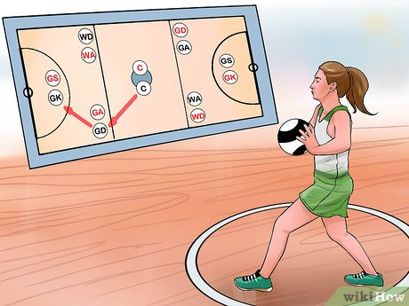

HOME
ABOUT US
CONTACT US
Netball
Sport
Netball is a ball sport played by two teams of seven players, usually on an indoor court, and is predominantly played by women.
It is among a rare number of sports which have been created exclusively for the female sex,
although efforts to expand the game to mixed and men's teams now exist.
Originating in England, UK, in the late 19th century, the sport is played specifically in schools and is most popularly played in Commonwealth nations.
The sport also uses outdoor netball courts.
The sport, originally described as 'women's basketball',
but distinct from the related sport of basketball as played by women,
is distinguished from its 'sister' sport by the bar on dribbling,
bouncing or running in possession of the ball,
and the rules defining positions which detail in which court areas specific players can compete.
Netball, therefore, is even more focussed on accurate passing and positioning than its sister sport, and physical player contact more controlled.
According to the sport's international governing body, World Netball, the sport is played by more than 20 million people in more than 80 countries.
Major domestic leagues in the sport include the Netball Superleague in Great Britain, Suncorp Super Netball in Australia and the ANZ Premiership in New Zealand.
Four major competitions take place internationally: the quadrennial World Netball Championships, the Commonwealth Games, and the yearly Quad Series and Fast5 Series.
In 1995, netball became an International Olympic Committee recognised sport federation,
but it has not been played at the Olympics because the IOC Charter in part requires the sport have more men's teams than women's.
Games are played on a rectangular court with raised goal rings at each end.
Each team attempts to score goals by passing a ball down the court and shooting it through its goal ring.
Players are assigned specific positions, which define their roles within the team and restrict their movement to certain areas of the court. During general play,
a player with the ball can hold on to it for only three seconds before shooting for a goal or passing to another player.
The winning team is the one that scores the most goals. Netball games are 60 minutes long.
